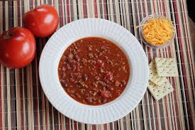

Chili con Carne Recipe
Description
A hearty spicy dish that that is perfect for cool fall evenings or anytime you want an easy, flavorful meal.

Ingredients
This recipe is easily scalable, just watch the heat. You can always add more to get the right zing!
- 2 lbs. ground beef
- Olive oil
- 2 medium onions, chopped
- 2-4 jalapenos, chopped
- 1 red or green bell pepper, chopped
- 2 cloves garlic, minced
- 1 tsp. salt
- 1/2 tsp. pepper
- 1/2 cup chili powder
- 1 28 oz can crushed tomatoes
Optional toppings
- Sour cream
- Chopped onion
- Shredded 'Mexican' cheese
Directions
- Brown and drain beef, set aside.
- In a 8 qt pot, cook onions in a little olive oil.
- When onions are soft, add peppers.
- When peppers are done, add garlic.
- As garlic becomes fragrant, add tomatoes.
- Add beef to pot, stir, and simmer
- Simmer long enough for flavors to merge, preferably for one hour or more.
- Serve hot.
- Enjoy with whatever toppings you like!
Home